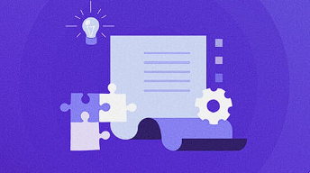
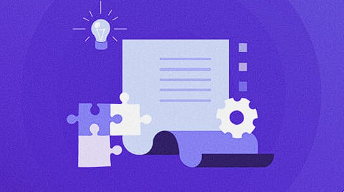

Nah, blogger adalah orang yang membuat atau memiliki dan mengelola blog, membagikan pandangan serta perspektif kepada audiens untuk tujuan pribadi maupun bisnis. Blogger juga merupakan nama layanan blogging dari Google, dengan alamat Blogger.com atau yang sering kita jumpai sebagai Blogspot.
Di artikel ini, kami membahas berbagai informasi seputar blog, seperti apa itu blog, apa itu blogging, sejarah blog, berbagai jenis blog, fungsi blog, perbedaan blog dan website, dan lain sebagainya. Selamat membaca!Blogging adalah aktivitas mengelola blog, seperti menulis, memperbarui, atau menambahkan elemen lainnya (misalnya video) pada konten blog. Aktivitas ini dilakukan oleh blogger dengan memanfaatkan tool digital yang ada di Internet.
Aktivitas blogging mulai populer pada awal tahun 2000-an ketika sejumlah blog berbau politik bermunculan. Beberapa saat setelahnya, tema how-to dan tutorial mulai muncul. Sejak saat itu, aktivitas ini pun menjadi sangat populer. Namun, yang jadi pertanyaan, mengapa kegiatan mengelola blog bisa jadi seterkenal ini?
Nah, setelah membahas apa itu blog dan apa itu blogging, kami akan menjelaskan sejarahnya.Blog pertama kali digagas oleh Blogger.com pada bulan Agustus tahun 1999, yang kemudian diakuisisi oleh Google pada tahun 2003. Sejarah blog dimulai dari istilah ‘Weblog’, yang diciptakan oleh Jorn Barger pada tanggal 17 Desember 1997.
Awalnya, aktivitas mengelola blog banyak dilakukan untuk segmen berita dan informasi. Tujuannya mirip seperti koran yang sudah lebih dulu ada, tapi blogging berkembang lebih cepat secara komparatif. Update informasi yang terus-menerus dan kemudahan memilih topik yang sesuai dengan minat dan hobi menjadi dua dari sekian alasan mengapa orang-orang mulai melakukan blogging.
Tahun berikutnya, yaitu pada tahun 2003, WordPress pun diluncurkan, menawarkan segala kemudahan bagi orang-orang yang tertarik untuk memulai blog dan menjadi blogger. Website blogging kemudian menjadi terkenal dan menarik perhatian warganet.Beberapa blogger, seperti ProBlogger.net dan JohnChow.com, menjadikan blog miliknya sebagai ‘mesin pencetak uang’ dengan bekerja sama dengan pihak ketiga (dalam hal beriklan).
Keduanya bahkan menjadi contoh bagaimana Anda juga bisa mencoba cara mendapatkan uang dari internet dengan mengonlinekan blog.Setelah mengetahui apa itu blog dan sejarah blog, selanjutnya kami akan membahas jenis-jenis blog.
Ada 4 jenis blog yang cukup populer saat ini, yaitu:
Penjelasan dan contohnya akan kami jelaskan di bawah ini.
Jenis blog ini lebih difokuskan pada sang blogger sendiri, bukan audiens. Blogger pribadi biasanya menjadikan blog miliknya sebagai jurnal atau dokumenter tentang hidupnya, minatnya, atau hobinya.
Karena tujuannya adalah untuk menuangkan cerita pribadi sang blogger, tipe blog seperti ini umumnya tidak hanya membahas satu topik. Sang blogger bisa saja membahas berbagai subjek sesuai minatnya.
Contohnya adalah Design for Mankind. Pemiliknya, Erin Loechner, menceritakan tentang keluarganya, proyek pekerjaannya, dan refleksi diri.
Jenis blog berikutnya adalah blog niche. Jenis ini benar-benar membahas topik tertentu, biasanya berkaitan dengan minat, skill, dan pengetahuan sang blogger. Misalnya, apabila Anda suka sekali membaca buku, Anda bisa membahas segala hal tentang buku saja.
Nah, berikut niche blog yang cukup populer di komunitas blogging:
Dalam urusan tampilan dan format, jenis blog ini memang seperti blog pada umumnya, tapi konten-konten yang diterbitkan berjenis multimedia, misalnya video dan podcast. Jadi, postingan yang diutamakan bukanlah tulisan.
Selain itu, jenis blog multimedia juga biasanya mencakup cuplikan video atau podcast, daftar isi, dan kutipan penting.
Sesuai tipenya, konten dalam jenis blog seperti ini berfokus pada kejadian aktual, serta informasi terbaru yang dirilis di industri tertentu. Tidak seperti blog lain, blog berita biasanya tidak menyertakan opini atau konten pribadi.